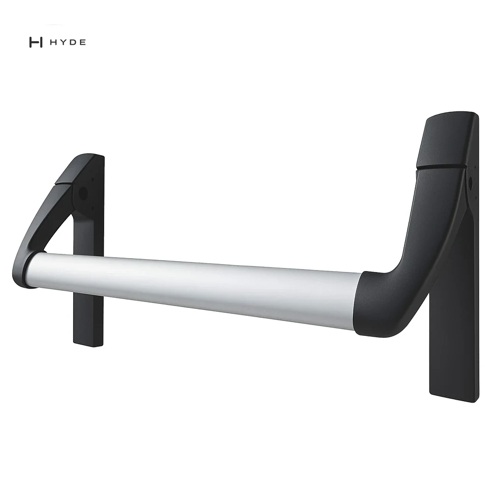
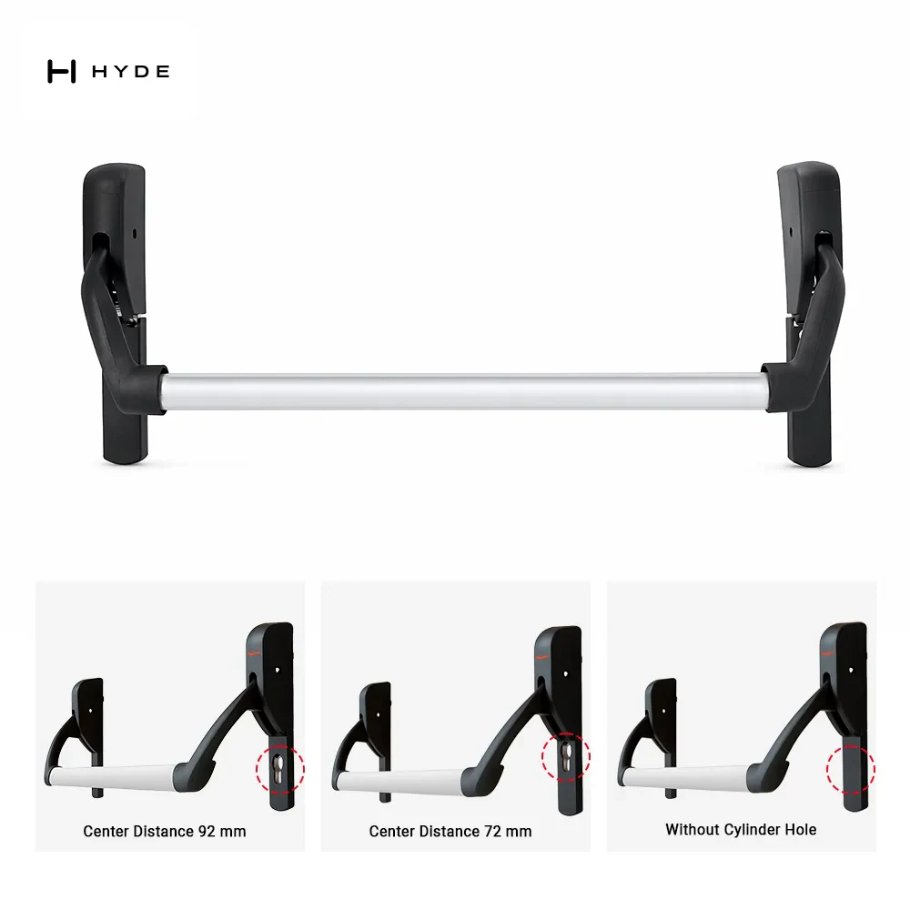
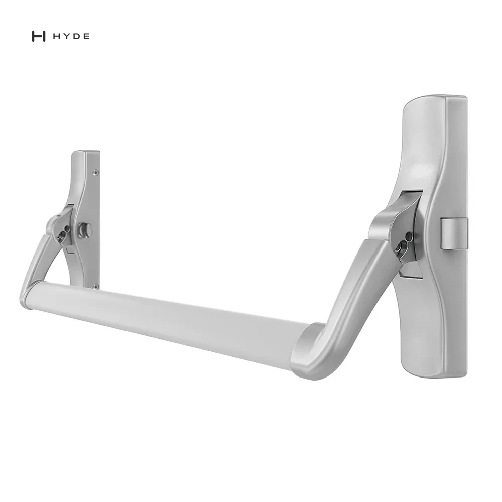
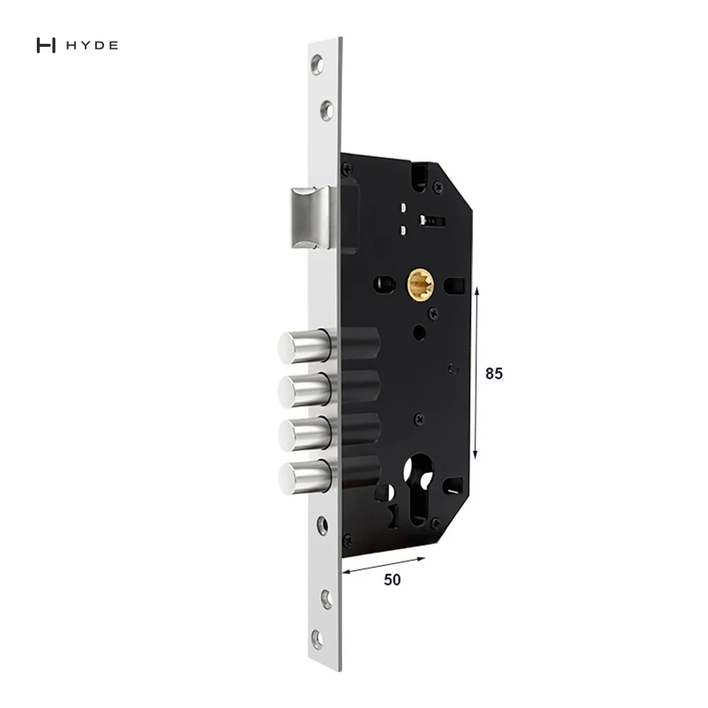
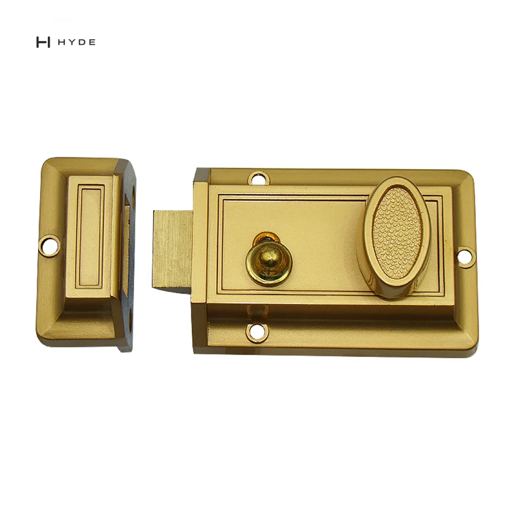

307 Panikstange
1000 mm Druckstange aus Aluminium, für DIN-links und DIN-rechts umstellbar, aus eigenem Werkzeug.
BAU 2027 · München
Vom 11. bis 15. Januar 2027 sind wir auf der Messe München, mit den Panikstangen, Einsteckschlössern, Aufschraubschlössern und Schließanlagen-Zylindern, nach denen Einkäufer uns am häufigsten fragen. Vereinbaren Sie einen Termin am Stand und bringen Sie Ihre Zeichnungen oder die Artikelnummern mit, die Sie heute beziehen.
Wählen Sie einen Tag und sagen Sie uns, worüber Sie sprechen möchten. Die Uhrzeit bestätigen wir per E-Mail.
Wir verwenden diese Angaben nur, um den Termin zu vereinbaren und nachzubereiten.
Jedes der folgenden Modelle hat eine eigene Seite mit Datenblatt und Fotos. Am Stand können Sie die Teile in die Hand nehmen, die Befestigungspunkte mit Ihrer Tür abgleichen und Muster in der gewünschten Oberfläche anfragen.

1000 mm Druckstange aus Aluminium, für DIN-links und DIN-rechts umstellbar, aus eigenem Werkzeug.

900 mm Stange, Schlosskasten mit 72 und 92 mm Entfernung, Messingzylinder und Edelstahldrücker im Set.

1040 mm Einpunkt-Druckstange mit Außendrücker.

85 mm Entfernung, 50 mm Dornmaß, Profilzylinder, vier Rundriegel.

Zinkdruckguss, 60 mm Dornmaß, für 35–55 mm Türen, links wie rechts einsetzbar.
Zylinder für Haupt- und Generalhauptschlüsselanlagen sowie Bauschließungen, geplant nach Ihrer Türliste.
Canton Hyland fertigt seit 1998 Türbeschläge in Xiaolan, Zhongshan (China); das Qualitätsmanagementsystem ist seit 2002 nach ISO 9001 zertifiziert. Ein großer Teil unserer Produktion geht unter der Marke unserer Kunden hinaus: Schicken Sie uns eine Zeichnung oder ein Muster, und wir bauen das Werkzeug. Die meisten Modelle beginnen bei 300 bis 5.000 Stück; Muster sind kostenpflichtig und werden mit dem ersten Serienauftrag verrechnet.
Muster und Angebote können Sie wie gewohnt anfragen. Alles, was wir auf den Stand mitbringen, steht mit Datenblatt auf dieser Website.